Wicked Engine’s graphics in 2024
We are near the end of 2024 and I wanted to write up a long post about the current state of the rendering in Wicked Engine. If you are interested in graphics programming, then strap yourself in for a long read through some coarse brain dump, without going in too deep to any of the many topics.
Forward or deferred rendering?
Always the first question: forward and deferred rendering? These are the two main choices for a renderer, probably every graphics programmer knows what they are. In the current year of 2024, Wicked Engine is mainly a forward renderer, with some twists. To be able to use many lights, I am still using the tiled forward approach, which means all the lights inside the camera are binned to small 8×8 pixel tiles on the screen. Each tile will thus have a minimal list of lights that should be iterated by every pixel inside when lighting up the surface. The main optimizations I’ve used for some years now is the “2.5D culling” and the “flat bit arrays” methods, which I really liked. This year I slightly rearranged a couple of minor things to the related data structures:
- The light/probe/decal data array is not a separate buffer any longer, but simply put into the global per frame constant buffer. Before this, these were kept in a separate structured buffer, but now I figured my max light count in the camera can fit into 64KB constant buffer anyway, so it simplifies things. I haven’t noticed worse performance with it. I do load from it with wave-coherent index after all thanks to the flat bit array method.
- I rearranged the light loops so they always operate strictly on one light type (directional/point/spot), which gave some minor performance improvement. So instead of one big loop that checks the type of light and calls the appropriate function, now there are 3 loops for each type. This also allowed to avoid all the tile checking for directional lights, because they are always affecting the full screen, that specific loop is just going over all of them which simplifies the shader further.
- Environment probes are no longer using a TextureCubeArray, but they are using bindless TextureCubes instead. This easily allows for them to have different resolutions and texture formats. Also adds the ability for the user to load one from file and use that without any processing required. Same for decals, they’ve been using bindless instead of an atlas for some time now.
The main twist to the forward rendering is the inclusion of a secondary “visibility buffer”, to aid with effects that would better fit into a deferred renderer.
Visibility Buffer
I always wanted to support all the post processing that deferred rendering supports, but normally forward rendering doesn’t write any G-Buffer textures to allow this. Some years ago I used a thin G-buffer for this written by the depth prepass. Now the depth-prepass for the main camera writes a UINT texture that contains primitive IDs, this is called the visibility buffer. This is some overhead compared to depth-only pass, but less than writing a G-buffer with multiple textures. From this primitiveID texture any shader can get per-pixel information about any surface properties: depth, normal, roughness, velocity, etc. The nice thing about it that we can get this on the async compute queue too, and that’s exactly what happens. After the visibility buffer is completed in the prepass, the graphics queue continues rendering shadow maps, planar reflections and updating environment probes, while the compute queue starts working independently on rendering a G-buffer from the visibility buffer, but only if some effects are turned on that would require this:
- depth buffer: it is always created from the visibility buffer. The normal depth buffer is always kept in depth write state, it’s never used as a sampled texture. This way the depth test efficiency remains the highest for the color and transparent passes later.
- velocity: if any of the following effects are turned on: Temporal AA, Motion Blur, FSR upscaling, ray traced shadows/reflections/diffuse, SSR…
- normal, roughness: if any of the following effects are turned on: SSR, ray traced reflections
- some other params are simply retrieved from visibility buffer just on demand if effects need it, but not saved as a texture: for example face normal
- light buffers: these are not separated, so things like blurred diffuse subsurface scattering is not supported. I support a simple wrapped and tinted NdotL term for subsurface scattering instead.
Since there is no overdraw when creating these G-buffers on compute queue, it can be beneficial compared to a normal rasterized G-buffer prepass.
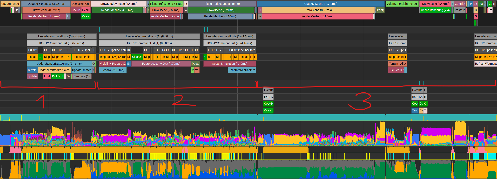
1: Depth prepass on graphics, particle updates on async
2: Shadow pass, planar reflections on graphics, visibility buffer and effects on async
3: Opaque forward pass on graphics (also sampling compute effects), then remaining post processes until the end
What does this texture actually store? It’s a single channel 32-bit UINT texture, and normally that wouldn’t be enough to store both primitive and instance ID. But there is a workaround, in which I store 25 bits of meshlet ID and 7 bits of primitive ID. A regular mesh wouldn’t fit into it, since it limits to 128 triangles, but with a lookup table it’s possible to manage. The ShaderMeshlet structure in Wicked Engine is used exactly for this:
struct ShaderMeshlet
{
uint instanceIndex;
uint geometryIndex;
uint primitiveOffset;
uint padding;
};We can trivially divide up every instance of every mesh into a number of these small meshlets, simply take up to 128 triangles into one meshlet and the remaining will go into the next meshlet until all triangles are accounted for. Note that instead of 128, in the end 124 triangles was chosen to also fit the recommended mesh shader limits which can be used optionally. A compute shader creates a compacted meshlet buffer for the whole scene like this, so the meshlets can be indexed by 25 bits of a pixel of the visibility buffer, and a triangle within a meshlet with the remaining 7 bits. So with 32 bits, we can look up a meshlet, from that we look up the instance which has the transform matrix, the geometry which has the vertex buffers, and the triangle. We can now use the bindless ShaderScene (which is globally accessible from the per-frame constant buffer) to retrieve everything about what the visibility buffer pixel refers to. I use a structure like this to help with packing/unpacking primitive ID in a shader:
static const uint MESHLET_TRIANGLE_COUNT = 124u; // could be 128 but 124 is in theory better for mesh shader
inline uint triangle_count_to_meshlet_count(uint triangleCount) // computes the number of required trivial meshlets for a mesh
{
return (triangleCount + MESHLET_TRIANGLE_COUNT - 1u) / MESHLET_TRIANGLE_COUNT;
}
struct PrimitiveID
{
uint primitiveIndex;
uint instanceIndex;
uint subsetIndex;
// These packing methods require meshlet data, and pack into 32 bits:
inline uint pack()
{
// 25 bit meshletIndex
// 7 bit meshletPrimitiveIndex
ShaderMeshInstance inst = load_instance(instanceIndex);
ShaderGeometry geometry = load_geometry(inst.geometryOffset + subsetIndex);
uint meshletIndex = inst.meshletOffset + geometry.meshletOffset + primitiveIndex / MESHLET_TRIANGLE_COUNT;
meshletIndex += 1; // indicate that it is valid
meshletIndex &= ~0u >> 7u; // mask 25 active bits
uint meshletPrimitiveIndex = primitiveIndex % MESHLET_TRIANGLE_COUNT;
meshletPrimitiveIndex &= 0x7F; // mask 7 active bits
meshletPrimitiveIndex <<= 25u;
return meshletPrimitiveIndex | meshletIndex;
}
inline void unpack(uint value)
{
uint meshletIndex = value & (~0u >> 7u);
meshletIndex -= 1; // remove valid check
uint meshletPrimitiveIndex = (value >> 25u) & 0x7F;
ShaderMeshlet meshlet = load_meshlet(meshletIndex);
ShaderMeshInstance inst = load_instance(meshlet.instanceIndex);
primitiveIndex = meshlet.primitiveOffset + meshletPrimitiveIndex;
instanceIndex = meshlet.instanceIndex;
subsetIndex = meshlet.geometryIndex - inst.geometryOffset;
}
}Note the valid check: I always add 1 into the visibility buffer if something’s rendered into it, to just indicate that this pixel is not cleared. Otherwise the first meshlet’s first primitive’s ID could be 0, the same as if nothing’s rendered. This could be problematic in some cases, because you couldn’t differentiate between sky and first primitive with only the visbuffer. The visbuffer is always cleared to 0 before rendering. If you thought clearing the visbuffer instead to UINT_MAX would also make sense, you are right, but some graphics API don’t have dedicated clear values for UINT texture and UINT_MAX can’t be safely represented.
This gets a bit more complicated with mesh shaders, that require meshlets to use a different index buffer that’s spatially clustered, but more on that later.
There are no barycentrics stored within the visibility buffer, which would be required for proper texture sampling with automatic LOD. They can be computed with maths, you can read my other blog about derivatives in compute shaders.
First person weapon rendering with visibility buffer
One great thing with the visibility buffers is the fact that we don’t have to use the hardware depth buffer as a texture, but we can compute it entirely from just that UINT32 primitiveID. From the primitiveID you can load the 3 vertices and perform barycentric interpolation on the position attributes, then project them with the projection matrix for every pixel, thus you get back the depth of them. Why is this useful? For one you don’t need to read back the depth buffer itself, which could involve decompression, and loss of the depth testing acceleration metadata (I want depth testing for later passes too, like opaque color and transparents). Although you can control it better on consoles when decompression happens and how you retain the data, but on PC you can’t so this is one way to increase chance for better performance. Second, you can do some weird things with the depth buffer, yet still get back the correct depth when you read it back.
For first person weapon rendering I use a trick in which I draw the foreground object (the weapon) with a squished viewport Z range. I set the ZMin of the viewport to 0.99, and the ZMax to 1.0 (using reversed depth buffer that has 1.0f for near plane and 0.0f for far plane). This squishes the depth values of the weapon to be always really close to the near plane, and always occlude everything else that’s not a foreground object. The objects which are not foreground objects are rendered with a normal viewport Z range instead. This makes the weapon always render on top, and since we never read back the normal depth buffer, but compute it from primitiveID, we don’t get back squished depth values for the weapon, but normal depth as if it was rendered with normal viewport. But it still renders on top of everything else.
If you would read from the regular depth buffer in this case that would be problematic for any shader that for example wants to compute 3D world position for pixels from the depth buffer.
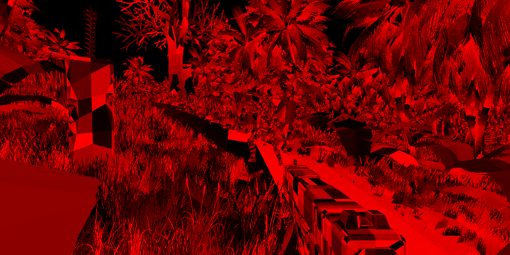
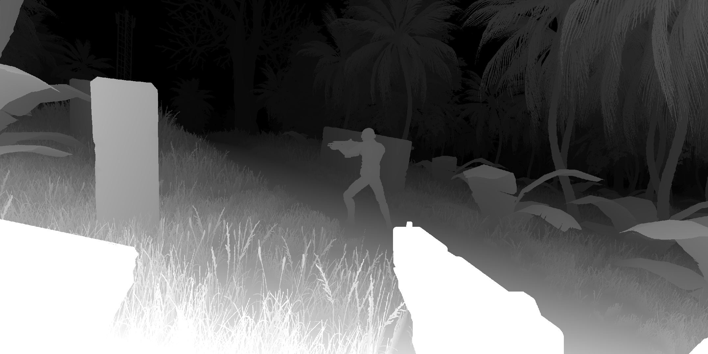
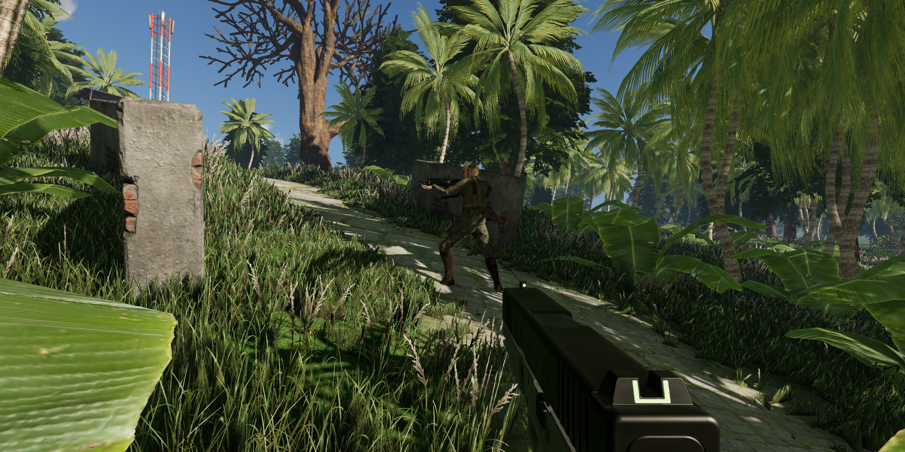
Mesh shaders
I have dabbled a bit in mesh shaders, and now the complete rendering can be switched to use mesh shaders, if hardware supports it. I started writing a dedicated blog on it with my findings but got bored with it and never finished. The results were not totally to my liking, so they remain an optional feature that you can experiment with.
What I liked:
- Easy to try out in existing draw call pipeline, you replace draw calls amplification/mesh shader and still benefit from meshlet culling
- The amplification – mesh shader is really good in that you don’t have to set up additional memory buffers and complicated indirect rendering
- You don’t need the potentially slow SV_PrimitiveID, you can write your own primitive ID from mesh shader
- mesh shader is really useful for some other geometry shader like functionality
What I didn’t like:
- Lot of work needed to get to performance level of vertex shader
- Limits the async compute performance a lot when using amplification/mesh shader compared to a vertex shader
- Additional memory requirement for storing clusters
- Couldn’t get it to work with AMD, only Nvidia. It just crashes driver without any info
- Vulkan incompatible with DX12 way of specifying per-primitive attributes in shader compiled to spirv
In some very vertex heavy scenes I vastly outperformed vertex shader rendering with mesh shaders with lot of culling (think stanford bunny replicated a couple times). But in real scenes, the performance was always worse than the vertex-shader based rendering. One of the reason is that a lot of async compute works runs a lot worse when mesh shader is used, parallelization is nearly totally held back by mesh shader. The other thing is that in real scenes I’m rarely vertex limited, it’s usually the pixel shaders which are the heaviest.
Take a look at the test scene with copy-pasted bunnies:
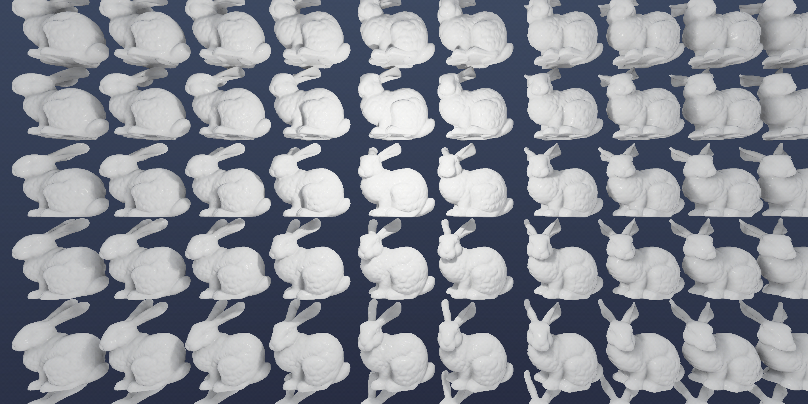
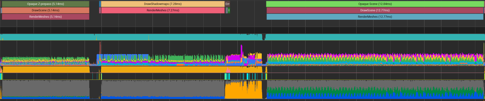
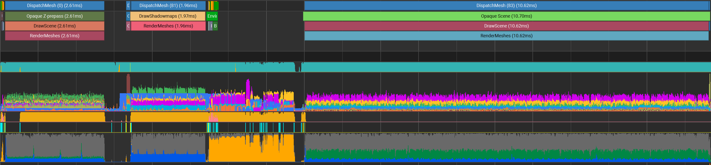
And here is the other scene where mesh shader is worse, which represents a more realistic use-case:
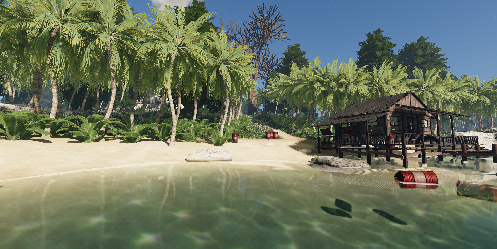
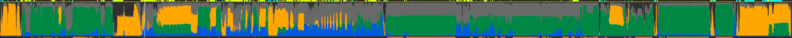
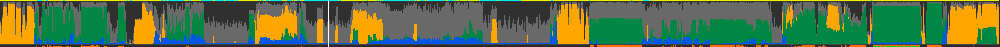
Since it can easily fit into existing regular draw-call rendering, it’s also possible to switch to mesh shader rendering only for very high poly models. We just need cluster data for it, and have an if to choose between DrawIndexedInstanced or DispatchMesh.
An other note is that because the mesh shader is using clusters with a totally different index buffer than the original, the visibility buffer lookup will be also different. In the ShaderMeshlet structure that I described earlier, I can also find out from the ShaderGeometry whether the mesh is using clusters, and if yes, then the shader will use the cluster’s index buffer instead when referencing the primitive with the primitiveOffset. Just some added complexity for the shaders that need to process the visibility buffer. I added this triangle index loading function to the PrimitiveID struct that I showed earlier that does the pack/unpack to uint:
// this is a part of PrimitiveID shader structure, to help loading triangle indices from visibility buffer:
uint3 tri()
{
ShaderMeshInstance inst = load_instance(instanceIndex);
ShaderGeometry geometry = load_geometry(inst.geometryOffset + subsetIndex);
if (geometry.vb_clu >= 0) // check if geometry is clustered (if it's using mesh shader)
{
const uint clusterID = primitiveIndex >> 7u;
const uint triangleID = primitiveIndex & 0x7F;
ShaderCluster cluster = bindless_structured_cluster[NonUniformResourceIndex(geometry.vb_clu)][clusterID];
uint i0 = cluster.vertices[cluster.triangles[triangleID].i0()];
uint i1 = cluster.vertices[cluster.triangles[triangleID].i1()];
uint i2 = cluster.vertices[cluster.triangles[triangleID].i2()];
return uint3(i0, i1, i2);
}
const uint startIndex = primitiveIndex * 3 + geometry.indexOffset;
Buffer<uint> indexBuffer = bindless_buffers_uint[NonUniformResourceIndex(geometry.ib)];
uint i0 = indexBuffer[startIndex + 0];
uint i1 = indexBuffer[startIndex + 1];
uint i2 = indexBuffer[startIndex + 2];
return uint3(i0, i1, i2);
}
uint i0() { return tri().x; }
uint i1() { return tri().y; }
uint i2() { return tri().z; }The meshlet clustering was made with the meshoptimizer library by Arseny Kapoulkine. The cluster structures are containing indirection data from spatially grouped cluster geometry to the original mesh geometry:
struct ShaderClusterTriangle
{
uint raw;
void init(uint i0, uint i1, uint i2, uint flags = 0u)
{
raw = 0;
raw |= i0 & 0xFF;
raw |= (i1 & 0xFF) << 8u;
raw |= (i2 & 0xFF) << 16u;
raw |= (flags & 0xFF) << 24u;
}
uint i0() { return raw & 0xFF; }
uint i1() { return (raw >> 8u) & 0xFF; }
uint i2() { return (raw >> 16u) & 0xFF; }
uint3 tri() { return uint3(i0(), i1(), i2()); }
uint flags() { return raw >> 24u; }
};
static const uint MESHLET_VERTEX_COUNT = 64u;
struct ShaderCluster
{
uint triangleCount;
uint vertexCount;
uint padding0;
uint padding1;
uint vertices[MESHLET_VERTEX_COUNT];
ShaderClusterTriangle triangles[MESHLET_TRIANGLE_COUNT];
};With this it is possible to support a single visibility buffer both the naive clustering with drawcall-based rendering and mesh shader-based rendering. The shader that loads from the visibility buffer will have some additional complexity where it decides whether the visibility buffer belongs to a clustered or a simple mesh.
Visibility compute shading
An other thing that can be used for rendering is a fully compute based resolve of the visibility buffer. In Wicked Engine this is called visibility compute shading. If you turn this on, the forward geometry pass that renders final shaded colors will be replaced by two passes: surface resolve and lighting resolve. The surface resolve is simply creating the albedo channel of the scene on the compute queue, and some other params that will be required by lighting for different shading types. The lighting pass will run after shadow maps, planar reflections and env probes finished on the graphics queue, so it is currently not async. All this supports different material types too unlike regular deferred by binning screen tiles to material types and running different shaders for different bins. The visibility compute shading costs extra memory and it can be slower on weaker GPUs, but faster on bigger GPUs, so it remains optional for now. It is also a good way to test that bindless resources work properly, because this technique entirely relies on this.
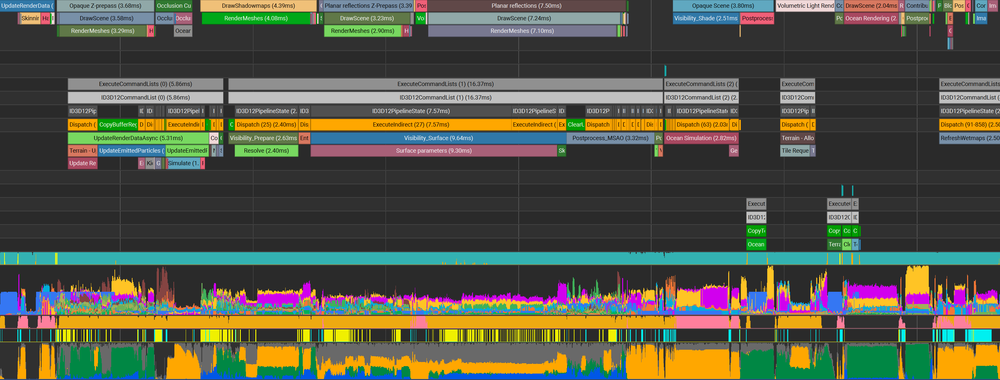
Bindless resources
Bindless resources are now used everywhere. Even for simple forward rendering, there is no resource binding at all. That’s why it surprised some people that they didn’t find where the textures and vertex buffers get bound for the draw calls (index buffer is still bound normally). With bindless there are many smart things to do, but for regular forward rendering draw calls I just set push constants. A small uint4 sized push constant struct will tell the object rendering shader:
- instance buffer descriptor, offset
- geometry index
- material index
The vertex shader input is just the auto generated vertexID and instanceID. The instanceID will be used to look up the current instance index, and from that the “ShaderMeshInstance” struct can be loaded. The geometryIndex tells the mesh part (material subset), and used to load the ShaderGeometry which contains the vertex buffer descriptors. The materialIndex (could also be loaded from ShaderGeometry with an indirection) contains which material is being drawn, so the shader can load the ShaderMaterial struct which contains an array of texture descriptor indices and other visual parameters. All these structures are always available to the shaders, freely indexable globally. The structures can freely contain arbitrary data and descriptor indices as simply ints (if the int is <0, that means the descriptor is invalid, mustn’t be used). For a more detailed explanation about bindless resources, check out my older blog.
Buffer types
In the past I liked using the ByteAddressBuffers for everything. This year I changed a lot of ByteAddressBuffer usage to StructuredBuffer. This results in potentially faster/wider loads because the shader knows that the minimum alignment of the data is at least that of the structure type (ByteAddressBuffer has only 4byte guaranteed alignment). Also, there is no need to multiply addresses with strides, so removes some shader instructions.
An other things that I started doing a lot is using typed buffer loads for everything where appropriate (Buffer<T> in HLSL). This removes a lot of shader instructions where you convert data types manually, because the buffer loading converts them for you similarly to sampling a texture. Of course it’s only appropriate when your type is one of the DXGI_FORMATs. An other benefit is when a specific buffer you can determine its type from the CPU, so you don’t need to handle type selection in the shader, but rely on the buffer’s internal type conversion. The following buffers for example use typed loads:
- index buffer: UINT16/UINT32
- position: UNORM16/FLOAT32
- normal, tangent: SNORM8
- color: UNORM8
- morph: FLOAT16
Even though they are different buffer views, all these buffers are contained in one resource per mesh, just with different data offsets. They are laid out in structure of arrays layout. One other benefit of this is that not all meshes should contain every vertex property. If one property doesn’t exist on a mesh, the shader knows it because its vertex buffer descriptor is -1 and simply doesn’t load it, but can use a default value instead if needed. For more info about vertex buffer packing, read my other blog.
Texture compression
I integrated some texture compression shaders into the engine not too long ago, that can compress textures into Block Compressed (BC) formats very quickly, even at real time. Real time is compression is used for the terrain virtual texture and environment probes that are updated every frame. Apart from that, I made sure that if models are loaded that contain textures in non-GPU ready texture formats such as PNG/JPG/TGA/etc, they would be compressed to BC format automatically by default. Since the compression is entirely on GPU using shaders, this is seamless and helps save memory, as it is quite common that users put these types of textures on their models. As an extra, saved models storage cost remains as low as the compression of PNG/JPG/etc. allows. All the BC formats are now supported like this except BC7. BC7 can still be used if you load it manually from file, but there is no fast BC7 compression shader yet in the engine. The different BC formats are used for different things:
- BC1: base color without alpha
- BC3: base color with alpha, surface map containing roughness, metalness, reflectance, occlusion
- BC4: single channel texture, for example separate occlusion map, transparency map
- BC5: normal map
- BC6: lightmaps, environment maps, DDGI probes, surfels
For more information about how it is possible to use block compressing shaders in a graphics API, you can find more details in my format casting blog.
Texture Streaming
I added texture streaming recently to help more with memory consumption on top of texture compression. If the texture assets are coming from DDS files with mipmaps, they can automatically benefit from streaming. The streaming system simply starts loading the mipmaps continuously instead all at once, and only when requested by shaders. It can also throw out unused mips after a while. Since the textures are usually the main reason for large memory usage, streaming them makes a lot of sense and can help a lot. I made a detailed blog about how it works. I also put up a standalone DDS texture utility to Github that’s designed for streaming as it works with relative offsets. It’s a single file with no dependencies and not even any includes.
Shadow maps
Shadow map rendering received some performance improvements in recent years. Where I was first using texture arrays for shadow maps, now I am using a texture atlas to store them. A 2D texture atlas can’t store cubemap shadows for point lights natively, so they are just flattened and only one face of them is sampled in the shadow check for simplicity. I found that this is not too bad, I can still use multiple taps for soft shadows, but the UVs are clamped to not go over into a different rect in the atlas. The seams are usually not very visible in the shadows, only with very large softness setup.
An other thing with atlases is that each rect can be dynamically sized based on the importance of the light. I simply choose to scale down shadow resolutions for a light based on how large it is and how far away it is from the camera. You can also set a fixed shadow resolution per light if you need to. This will help us keep memory usage low while rendering many shadows.
For getting good performance with many shadows I am using the viewport instancing technique. With this I can render into multiple viewports in one draw call. It simply works as setting up one viewport for every directional light cascade, or every cubemap face that will be rendered, setting up their camera parameters and drawing with instancing. The instance count for a mesh is: num_instances * num_viewports. Each instance entry in the instance buffer will contain the camera index and the index of the ShaderMeshInstance, so the vertex shader can use the appropriate camera and instance matrix. Finally, the vertex shader outputs the SV_ViewportArrayIndex to tell which viewport it is rendering to. There is no need to use a geometry shader, just vertex shader with instancing.
For point lights, not all 6 faces are used, but only those that are visible from the main camera, so there is an extra frustum-frustum check on the CPU. Each frustum of the cubemap is tested against the main camera frustum, but each object is also tested against every cubemap frustum that’s visible from the main camera. This technique can be extended further too, by using all available 16 hardware viewports to even render many lights in one draw call. In Wicked Engine, currently it stops at rendering 1 full light in 1 draw call. This benefits cascaded directional lights and point lights, but for spot lights it’s not adding anything extra. There is also occlusion culling for shadowed lights to help performance further, more about that later.
The shadow atlas is also good for simplifying the clearing and binding shadow render targets for different lights, since all shadows will be rendered into 1 texture, we only need to clear the whole thing once and the whole shadow render pass will go uninterrupted. By the way, the whole shadow atlas is re-rendered every frame right now, there is no static light caching at the moment. The rects are also re-packed for every light every frame, but it’s very fast. By the way the shadow map format I use is R16_UNORM.
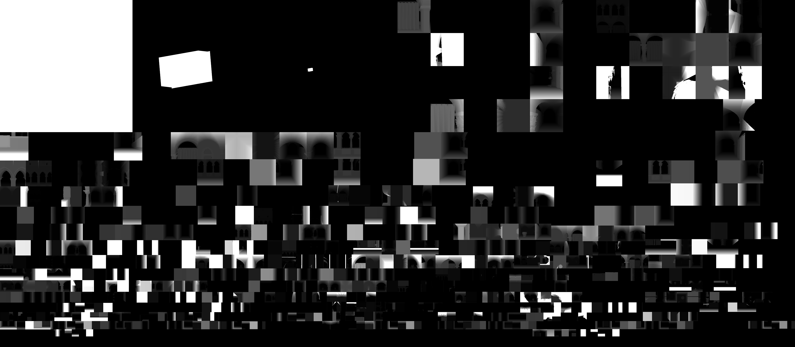
Note: point lights always allocate 6 nearby rects in the atlas, but only the visible faces will be rendered to. This simplifies lookup code in the shader significantly
I also changed the shadowmap sampling pattern from uniform grid to a vogel disk shaped one with per-pixel dithering. The dithering is jittered further when temporal AA is enabled, which blends out the dithering nicely. When TAA is not enabled, I experimented with applying a small blur (averaging) within the pixel quad immediately in the pixel shader. It worked out pretty well at first, although special care is needed to ensure that the pixel quad is fully alive at the point when applying it. With this, the per-pixel dither effect is largely reduced even without applying temporal accumulation. This picture shows the effect with the dithered disk shape at 3 samples per pixel:
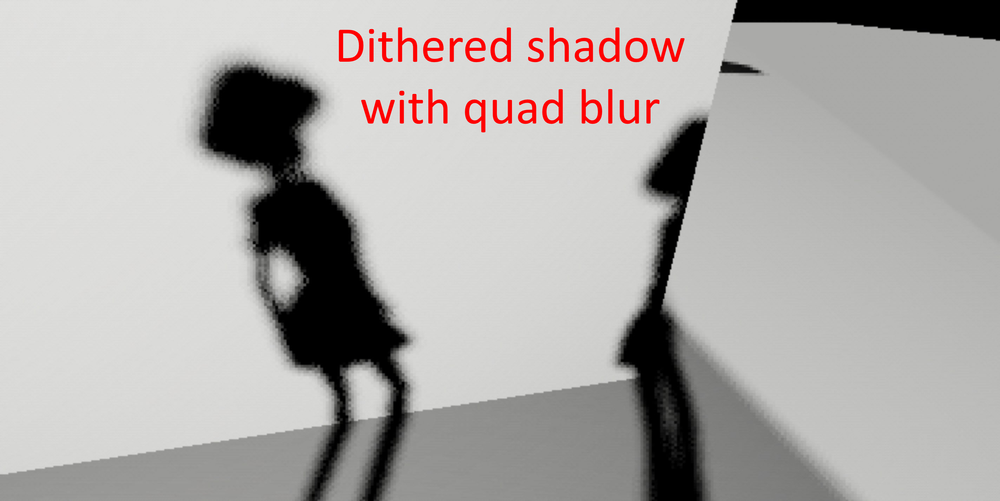
This looked pretty good to me, but unfortunately there was an issue appearing on AMD graphics card for me with only Vulkan. Others experienced issues also with DX12 which I could not repro. For now I removed this effect as it seemed to be too sensitive to various drivers. I keep the raw dithered shadows for now, which is not extremely bad either when the resolution is high and there are also textures and ambient light. This dithered shadow approach is kept because I also added the light size parameter which tells how much spread to apply to shadow sampling, and that didn’t work well with uniform grid sampling as banding becomes very visible. Dithering is also now used to switch between cascades, instead of a proper blending. This saves a bit more performance too.
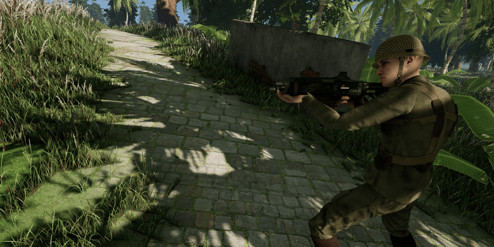
Occlusion culling
Wicked Engine uses the standard occlusion queries for occlusion culling by default. With the mesh shader pipeline, it is optional to use a different method that will test meshlets against a depth pyramid in the amplification shader.
The default occlusion queries are rendered immediately after the main camera depth prepass as oriented bounding boxes. Only vertex shader is used, and only a 4×4 matrix is sent for each box through push constants, with complete world transform and camera matrix combined. Rendering them is very fast. DX12 and Vulkan allows explicitly resolving the queries as a batch to a GPU Buffer mapped for CPU read. This means that after 2 frames the engine simply reads back the results of them just from a regular CPU pointer, without any GPU stalling that could have occurred in DX11. Resolving the batch of queries can also be done on the copy queue. Because there is some delay, some popping can be visible, but the engine tries to mitigate it by extending bounding boxes a bit to be more conservative, and keeping an occlusion frame history for 64 frames in a uint64 bitmask. The object only gets truly occluded if it was occluded for more than 64 frames, and becomes visible immediately.
Occlusion culling is not only performed for regular objects, but also for lights and the ocean.
- Lights: shadow casting lights will be occlusion culled to avoid shadow rendering for them. This is done by using predication queries, so it’s fully GPU-based, there is no readback delay. However this means that CPU commands will be executed for shadow rendering, but GPU can skip these commands.
- Ocean: because the ocean can request planar reflections to be rendered and also some expensive wave displacement texture updating is happening, it’s essential to have proper occlusion culling for it. The ocean occlusion test is using a low detail version of the ocean mesh (dynamically generated screen space water mesh) instead of a box. The results are read back to the CPU, so it will be able to skip all planar reflection rendering and ocean displacement updating from the CPU.
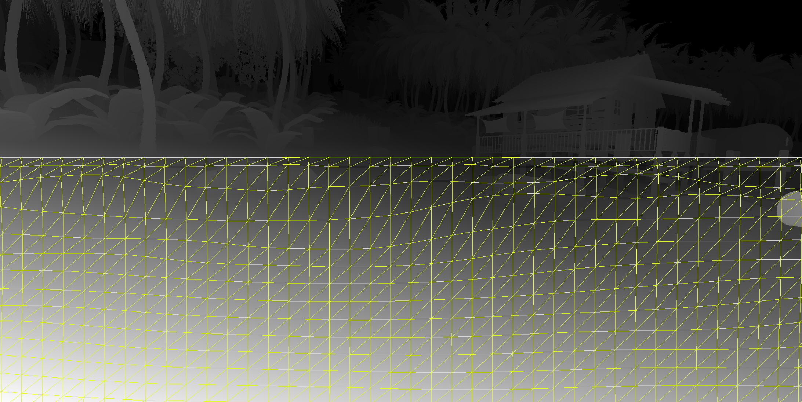
The hierarchical depth occlusion culling for the mesh shading pipeline is based on this blog. I found it to work all right, although it seemed that there are some false positives sometimes. Culling meshlets can improve performance of very high poly geometry significantly, I’ve written about that more above in the mesh shader section. In my implementation I used the depth buffer of the previous frame so there was still some lag.
MSAA
The trend nowadays is to not use MSAA, but rely on Temporal AA and upscaling. But in Wicked Engine, which is a forward renderer where supporting MSAA is trivial. You can still choose 2x, 4x and 8x MSAA for the main camera rendering. You can also choose to have MSAA for the environment probe rendering, which is always worth it for static probes. There is also MSAA always turned on for planar reflections, although they are rendered at lower resolution than the main camera. The visibility buffer part will always use only the first sample, so MSAA is turned off for all the secondary post process-like effects, but I think the error is acceptable. MSAA is also used to great effect on alpha tested materials, where alpha testing is using a dithered discard pattern to soften the cutoff under MSAA – very much like stochastic alpha with temporal AA, but doesn’t require any temporal accumulation.
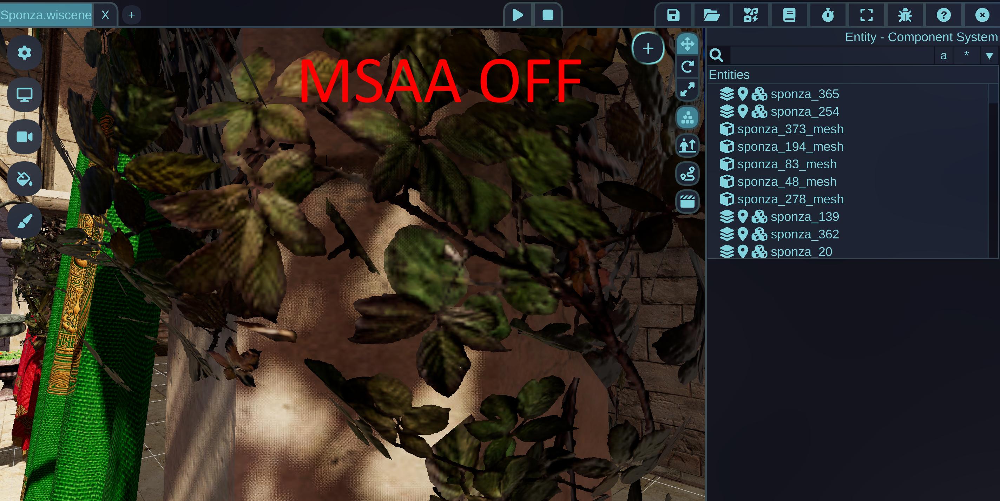
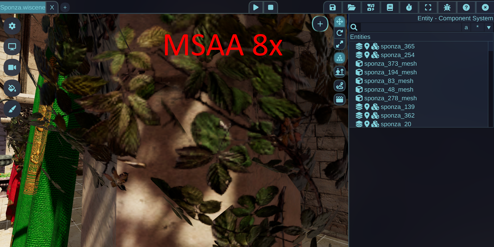
To do this kind of alpha testing when MSAA is enabled, I am writing the SV_Coverage bitmask from the pixel shader instead of using the discard or clip instruction which would discard all samples. Instead I compute a dithered alpha value and set the percentage of samples relative to the total current sample count as the bitmask value. This is done by the AlphaToCoverage function in the pixel shader:
inline uint AlphaToCoverage(half alpha, half alphaTest, float4 svposition)
{
if (alphaTest == 0)
{
// No alpha test, force full coverage:
return ~0u;
}
if (GetFrame().options & OPTION_BIT_TEMPORALAA_ENABLED)
{
// When Temporal AA is enabled, dither the alpha mask with animated blue noise:
alpha -= blue_noise(svposition.xy, svposition.w).x / GetCamera().sample_count;
}
else if (GetCamera().sample_count > 1)
{
// Without Temporal AA, use static dithering:
alpha -= dither(svposition.xy) / GetCamera().sample_count;
}
else
{
// Without Temporal AA and MSAA, regular alpha test behaviour will be used:
alpha -= alphaTest;
}
if (alpha > 0)
{
return ~0u >> (31u - uint(alpha * GetCamera().sample_count));
}
return 0;
}The returned value of the function above is directly used as the SV_Coverage pixel shader output. It also contains the logic for temporal AA and regular alpha test emulated by this method. I didn’t notice any performance difference between writing SV_Coverage and clip() for regular alpha test back when I tried this for the first time.
Because Wicked Engine is using render passes in Vulkan (Vulkan 1.3 dynamic renderpass) and DX12, doing MSAA through the renderpass interface makes the most sense. With this, you don’t do MSAA resolve in two steps, but tell the renderpass to resolve it to one of the render pass attachments. With this you don’t have to set up a barrier between rendering and resolving. It’s also possible to specify that you don’t need to retain the contents of the multi-sampled render target, only the resolved destination, which could be more optimally implemented by the graphics driver by not committing the MSAA texture to memory. This is probably only done by tile-based GPU architecture which runs the full renderpass in on-chip memory for a given tile instead of writing to render target memory. I see it as having a more future-proof way of rendering that the graphics driver could implement more efficiently if it can, but there are no downsides if it can’t.
Ray tracing
There have not been many updates for ray tracing, they are kind of complete for now as to what I wanted to have. Wicked Engine has these effects that use ray tracing:
- Path tracing (compute or hardware RT)
- Lightmap baking (compute or hardware RT)
- DDGI – Dynamic Diffuse Global Illumination with probes, statically baked probes also supported (compute or hardware RT)
- Surfel GI (compute or hardware RT)
- Ray traced reflections (hardware RT only)
- Ray traced shadows (hardware RT only)
- Ray traced ambient occlusion (hardware RT only)
- Ray traced diffuse (hardware RT only)
One small improvement to DDGI was added recently, to allow probe un-stucking automatically. This will always be done if there is a voxelized volume in the scene (which is also used for path finding). The shaders can check any world position against the voxel grid, so the DDGI probe update can check for each probe if it’s within a voxel. If it’s within a voxel, then it finds the nearest empty voxel within the allowed distance (probes must remain inside their cell, but some offset is allowed). Probes can sort of unstuck themselves because they try to keep distance from geometry dynamically with their mini depth buffer, but not always possible, when a probe is surrounded on all sides. When using the voxelization, it adds an extra safety to probes automatically. A short video of the feature:
I also added dynamic BC6 compression for DDGI, Surfel GI and lightmaps, to reduce their memory usage.
For me personally, real time ray tracing effects are either too noisy (shadows, ao, reflection…) or too leaky and slow to update (DDGI, surfel GI). They also increase memory usage a lot and I can never keep it above 60 FPS when they are enabled. Well, I still use a laptop with 2060 GPU which is a bit weak for ray tracing for any normal resolution. I don’t really like using real time ray tracing right now, but prefer old school techniques.
Planar reflections
I’m disappointed whenever I see a modern game not supporting proper mirror reflections or if it has screen space reflection (SSR) on flat water. That’s why in Wicked Engine I’d like to show that planar reflection is still relevant and it should be one of the first choices of a game when a reflection needs to be rendered. The planar reflection is the perfect solution for a mirror because that’s what it was made for, and it’s good enough to use even on a large water surface with waves, like an ocean or a lake. Even though the waves are not totally accurate to be represented, it’s still a lot better than noisy SSR that cuts of abruptly.
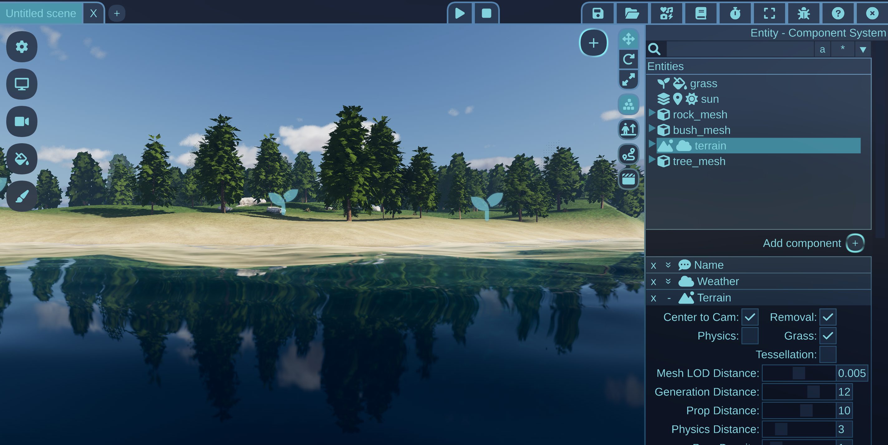
In Wicked Engine, the planar reflections are using a second full depth prepass + color pass with all the forward rendering pipeline capabilities. Although most of the secondary effects are turned off for them, simply by not running those passes for planar reflections. Also they don’t generate visibility buffer, only depth buffer in the prepass. Planar reflections rendering is also scheduled in the frame asynchronously to the main camera’s compute effects, so there is also room to utilize the modern graphics API to render them. Compared to the main camera, planar reflections are rendered in quarter of the main camera resolution in both axes so they become less dependent on the pixel shader performance, but more geometry heavy, which helps a bit with async compute passes at the same time. To combat the low resolution look, I choose to render them at 4x MSAA right now for some additional anti-aliasing. Quarter resolution means that the resolution is 1/16 compared to the main camera, and adding 4x MSAA on top doesn’t bring back the full detail, but I found it quite nice, for now, although it can be tweaked easily if needed.
FP16 – half precision float usage
The most important shaders have now been optimized with FP16 (half precision 16-bit float) support. This includes most of the shaders which are running with the default settings: object rendering shaders, tonemap, gui, particles, skinning. I’m not saying that it’s fully complete, but I managed to improve some shaders’ occupancy with it, which was my main interest. You really need to pay close attention at generated disassembly of the shaders and check what happens. In a lot of cases, you will get a ton of extra instructions to convert back and forth between float and half variables, you need to be extra careful to avoid it.
I switch to using fp16 by enabling half data types as min precision types like this in a HLSL global define:
#define half min16float
#define half2 min16float2
#define half3 min16float3
#define half4 min16float4
#define half3x3 min16float3x3
#define half3x4 min16float3x4
#define half4x4 min16float4x4By doing this the shaders will be compiled in a way that hardware that can support half precision will use it, but ones that don’t can fall back to using 32-bit floats. The main gotcha is that you can’t put half into constant and structured buffers, that’s not supported. Unfortunately that means you will get conversion from fp32 to fp16 when you load data. But there is a way that you can avoid it:
- You can use typed resources like Buffer<half> or Texture<half>, these will provide proper loads without conversion if your target variable is a half
- You can put 2 floats into 1 uint and unpack manually with f16tof32() hlsl function. Make sure that target variable that you load into is already a half. The driver is capable of optimizing away the redundant conversion
With that in mind I started packing all my floats that will be used as half into 2 uints in constant buffers and make getter functions on constant buffers like this small example:
struct Data
{
uint data;
half GetMetalness() { return f16tof32(data); }
half GetRoughness() { return f16tof32(data >> 16u); }
};
ConstantBuffer<Data> g_data;
// somewhere further in the shader...
half metalness = g_data.GetMetalness();
half roughness = g_data.GetRoughness();And when using textures and typed buffers, I make sure to declare descriptors with half, half2, half3 or half4 type, otherwise the compiler might not be able to figure out that you want to load half precision and do a fp32 load then convert to fp16 in shader code.
Usually my go-to practice is to replace everything to half that has to do with storing some kind of color value, especially if it’s coming from a texture. It’s incredibly rare that a texture contains full precision float data, so this will be a major thing to look out for. This is also true for HDR lighting values that are computed in the shader, half precision is enough for them, as the final lighting result will be written out to maximum a fp16 texture, but often even lower precision, like R11G11B10_FLOAT, or R9G9B9_SHAREDEXP (which is better, but only recently starting to get supported as render target). Since colors coming from textures are handled as half, it is also recommended to switch all your values in constant buffers that will be a multiplier for textures. Even if you don’t need two half values, still might be worth to pack it to a uint and use the unpacking trick, because compiler can generate better code without conversion in that case (even though you actually manually write conversion code in the shader).
Interpolators from vertex shader to pixel shader can also benefit from half precision. Vertex color and ambient occlusion can definitely be half, tangents too in my experience. Normals are not good for some reason at least in my physically based lighting BRDF shaders, interpolating normal at half precision proved to produce some black flickering pixel artifacts in some cases, so I left them at full precision interpolation. Also, if object scaling will be applied on tangents or normals, they are better transformed at full precision even though they will be normalized at the end. UVs are not a good fit for FP16, since they can get imprecise even at 2K texture resolution.
Other vectors that are input to lighting are a mixed bag. Surface normal, world position and view vector are not good at half precision when using physically based lighting. The light direction L is good enough at half precision. The half vector H must be full precision. The derived values of them like NdotV, NdotL, LdotH and VdotH are good enough at half precision, whereas NdotH must be full precision. These are just what I found so far with trial and error, might not be totally accurate though. Since there is this variation, it is difficult to arrive at a solution which has the least amount of conversions, but good usage of half precision computations. Then you also need to look at what kind of computations are performed on them. I found that the D_GGX function is one of the main culprits when half precision can generate artifacts. Make sure that the NdotH squared inside that computation gets computed at full precision, the rest can be half precision. The other brdf functions seemed to work well with half precision computations so far, although you need to ensure that the roughness doesn’t go too low, where the squared roughness would become too small for half precision. The minimum roughness value I allow in Wicked Engine right now is 0.045 which is still good enough for half precision computations (I think I’ve got this value from the Filament renderer). Also ensure that you clamp max color and lighting values to 65504.0, otherwise you can get infs or nans easily in half precision mode.
I also got away with fully FP16 calculations for light attenuation functions for spot and point lights. The distance, distanceSquared, rcp(distance), light cone angle and such values are all in FP16 and with I am seeing good results with usual light ranges that I used, though your mileage may vary.
All the math for parallax-corrected envmaps (box-ray intersection in local space) are also fine to do with half precision too in my experience.
There is also a pretty serious pitfall, that using f at the end of float constants in shaders will force that constant to be a full precision float. If you don’t write f, then it will be recognized as either float or half, whichever makes most sense. This is pretty easy to forget and receive a lot of conversions that way. The good thing that you will get shader compiler warnings for this too as “implicit conversion to lesser precision”.
Although the implicit conversion warning sounds like it is helpful, I turned it off pretty quickly. It was complaining too much and in some cases where you must do a conversion anyways, I like it better when it’s implicit and you don’t have to cast between float to half. If you cast, it will be a conversion anyway, but if you use unpack smartly, you can avoid the conversion but still get the warning.
I also changed a bunch of static const float global shader values to be a #define instead. This helps the compiler to select the appropriate precision for the constant depending on where it’s used. Sometimes it’s used in FP16, sometimes in full precision computations.
Also look out for some functions that might not have implementation in FP16. For example I found that on AMD assembly I was getting conversion in pow() functions. But in a lot of places I want to do a power of 2 or power of 8, so I explicitly created some macros for common pow values that I use, so they can generate half precision instructions:
#define sqr(a) ((a)*(a))
#define pow4(a) ((a)*(a)*(a)*(a))
#define pow5(a) ((a)*(a)*(a)*(a)*(a))
#define pow8(a) ((a)*(a)*(a)*(a)*(a)*(a)*(a)*(a))You can read a better blog by Matt Pettineo dedicated to FP16 in shaders here: Half The Precision, Twice The Fun: Working With FP16 In HLSL.
Shader pipeline compilation
Since DX12 was added where you had to specify render target formats for graphics pipelines, Wicked Engine had a compatibility feature to make it kind of like DX11, where only the render state needs to be declared, and the RT formats + MSAA sample count gets patched last minute before handing the PSO desc to the creation API. This is not the best way to handle it as recently shaders started to get huge, full of features and are taking a lot of time to compile (shader compilation is triggered when everything in the PSO is filled and PSO desc is passed to the API for creation). But this method is still pretty useful for small utility-like shaders, like image and font renderers that are very simple and are designed to be used anywhere, whatever render passes with whatever render texture formats.
So in Wicked Engine I recently choose to give the engine the ability to also specify the Render Target formats, Depth format and sample count for each pipeline optionally. In this case they will be compiled immediately, which will happen in the exact place when they are created. At engine startup, the heaviest shader pipelines – the object rendering shaders will be created immediately as soon as possible with all the possible known combinations of render formats (only those formats that the engine might really use for that specific pass) and sample counts. This is a very heavy operation, which is executed in the background on low priority job system threads. It’s low priority because I wanted the engine to be able to initialize and start rendering as soon as possible, even when these heavy pipelines are not yet created. For each kind of render pass we can always check whether the required pipelines are ready to be used or not. If the render pass is already about to render meshes and pipelines are not ready, then the engine unfortunately needs to be hard blocked at that point. In case of the editor, this allows to bring up an empty scene with GUI and sky rendering pretty quickly, and let those pso compilations run in the background while the user can already start to use some functionality.
Apart from these heavy pipeline compilations, every other shader is also loaded at startup on several threads to make Wicked Engine start up pretty quickly if I do say so myself. Except the first startup, which didn’t have any driver shader cache at all, startup of the editor should be less than a second.
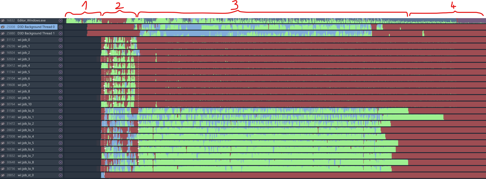
1: initializing DX12 graphics device on main thread
2: main thread already rendering initialization screen, loading all shaders on normal priority threads, starting object shader pipeline compilations on low priority threads
3: main thread rendering the complete editor interface, low prio threads continuing object shader pipeline compilations in the background (Note: D3D Background threads are from Nvidia driver, not mine though they seem related to pso compilation too)
4: everything’s complete, editor fully useable
Normal vector transforms
The general knowledge in graphics programming is that when you scale an object with non-uniform scaling, then transforming the normal vectors by the world matrix will get you slightly incorrect results, so you have to use the world matrix’s transposed and inverted variant. You would most likely compute it on the CPU and send it as an extra matrix to the shader to avoid computing inverse inside the vertex shader for every vertex. Turns out that there is a much less widely known trick to this which even works better called the adjoint matrix, that I just learned a few days ago, after more than 10 years of graphics programming. Inigo Quilez casually posted a short tweet that will probably make a lot of people update their engines. He also made a shadertoy to demo the technique. The code to apply the correction for a world matrix to support normal transform:
// Source: https://www.shadertoy.com/view/3s33zj
float3x3 adjoint(in float4x4 m)
{
return float3x3(
cross(m[1].xyz, m[2].xyz),
cross(m[2].xyz, m[0].xyz),
cross(m[0].xyz, m[1].xyz)
);
}Since this is just 3 cross products which map to efficient full-rate shader code, I decided that unlike the inverse-transpose, I will not compute this on the CPU, but on the GPU instead, for every vertex, which lets me reuse the original world matrix. A small complication is that in Wicked Engine, the position vertex buffer could be UNORM format, and in that case the world matrix also contains a scaling baked in that moves the mesh local space from normalized to original range, so this world matrix still cannot be used for normal transform, even with the correction applied. Wicked Engine also provides the Raw world matrix for every mesh instance on the GPU, which doesn’t contain the unnormalization, so that can be used for normal transform. I just add an extra method to my ShaderTransform class to get the Adjoint matrix, to be easily used for normal and tangent transformations:
struct ShaderTransform
{
float4 mat0;
float4 mat1;
float4 mat2;
void init()
{
mat0 = float4(1, 0, 0, 0);
mat1 = float4(0, 1, 0, 0);
mat2 = float4(0, 0, 1, 0);
}
void Create(float4x4 mat)
{
mat0 = float4(mat._11, mat._21, mat._31, mat._41);
mat1 = float4(mat._12, mat._22, mat._32, mat._42);
mat2 = float4(mat._13, mat._23, mat._33, mat._43);
}
float4x4 GetMatrix()
{
return float4x4(
mat0.x, mat0.y, mat0.z, mat0.w,
mat1.x, mat1.y, mat1.z, mat1.w,
mat2.x, mat2.y, mat2.z, mat2.w,
0, 0, 0, 1
);
}
float3x3 GetMatrixAdjoint() // use this for normal and tangent transform
{
return adjoint(GetMatrix());
}
};I recommend using a structure like this for all your rigid transformation matrices that never need the last row to minimize the data size. The structure can also be easily shared with C++, so you usually use the init() and Create functions from CPU side to fill matrix data from row-major matrix type, and GetMatrix() from shaders to unpack to shader-usable column-major matrix type.
One small gotcha that I found with this method, that the adjoint of the matrix is not good if you store it in FP16 mode because the values get too big for half precision too quickly. Contrast to that, the inverse transpose can be stored in FP16 and used with half precision math when transforming normals and tangents, but only up to a point. After a certain scaling, half precision inverse transpose will break too. For that reason, I reverted back to full precision normal and tangent computations instead when using the adjoint matrix (but in memory they are still stored in 8-bit per channel signed format, that doesn’t change).
Orthographic camera
Recently I added orthographic camera support to the engine. There were some engine-side changes that needed to be made to support all effects seamlessly. In a lot of places, where screen rays were computed (picking, view vector, ray tracing), I used a simplified assumption that the ray start position can be the camera position, and ray direction can be computed from that and one other point on either the near or far plane. This doesn’t hold up with an orthographic camera, as the rays need to be all parallel to each other. Ray directions are now thus computed usually from a point on the near plane and an other point on the far plane. This method is compatible with both the ortho and perspective cameras as well. A lot of shaders and also some cpp code needed changes to handle this.
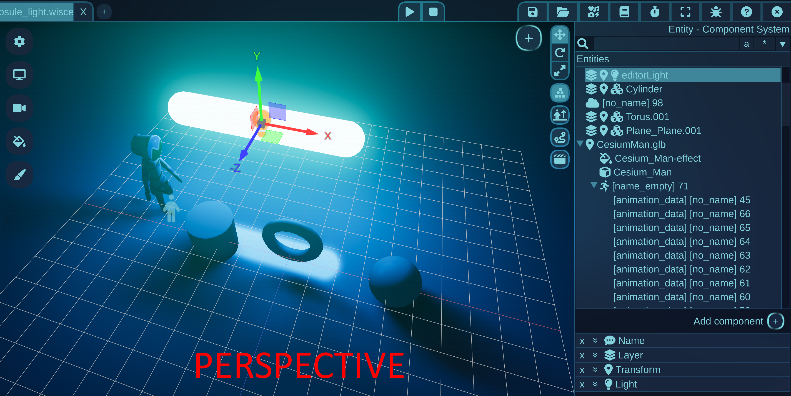
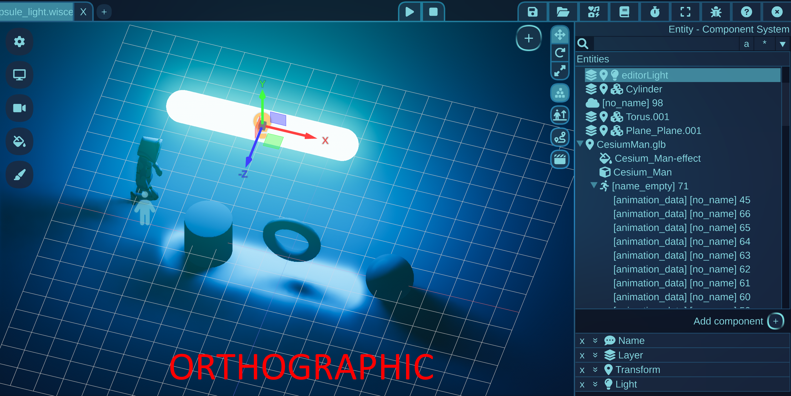
Removing the pos3D interpolator
Thinking those camera plane changes a bit further, I also wanted to make an other experiment, a way to reduce the interpolated parameters that are passed from vertex to pixel shader, specifically the world position value. On modern systems it can be preferred to reduce the number of parameters that are passed between shader stages if they can be replaced with some simple calculations in the next shader stage, even though it’s now in theory computed more often (per-pixel instead of per-vertex). Using more parameters can lead to reduced efficiency in the geometry processing which is already usually under-utilized relative to the whole compute-throughput of the GPU. Remember that this is sometimes a good advice for desktop GPUs, but probably not for mobile GPUs.
So to remove the float3 pos3D (world position) interpolator, what I did is to re-use the camera frustum logic which I used for view-vector and ray calculation for the ortho/perspective camera support. I extended my global camera constant buffer with this little structure that stores the corners of the view frustum in world space:
struct ShaderFrustumCorners
{
// topleft, topright, bottomleft, bottomright
float4 cornersNEAR[4];
float4 cornersFAR[4];
inline float3 screen_to_nearplane(float2 uv)
{
float3 posTOP = lerp(cornersNEAR[0], cornersNEAR[1], uv.x);
float3 posBOTTOM = lerp(cornersNEAR[2], cornersNEAR[3], uv.x);
return lerp(posTOP, posBOTTOM, uv.y);
}
inline float3 screen_to_farplane(float2 uv)
{
float3 posTOP = lerp(cornersFAR[0], cornersFAR[1], uv.x);
float3 posBOTTOM = lerp(cornersFAR[2], cornersFAR[3], uv.x);
return lerp(posTOP, posBOTTOM, uv.y);
}
inline float3 screen_to_world(float2 uv, float lineardepthNormalized)
{
return lerp(screen_to_nearplane(uv), screen_to_farplane(uv), lineardepthNormalized);
}
};With this structure I can compute the world position with the screen UV coordinates and the pixel depth value. The logic is to simply interpolate within the camera frustum volume that is defined by its 8 corner positions. I also added an other helper function onto the camera constant buffer to let me do all this from just the SV_Position input of the pixel shader. The camera constant buffer also knows the current resolution and near/far plane parameters of the camera which will be used for the calculations:
// Convert raw screen coordinate from rasterizer to world position
// Note: svposition is the SV_Position system value, the .w component can be different in different compilers
// You need to ensure that the .w component is used for linear depth (Vulkan: -fvk-use-dx-position-w)
inline float3 screen_to_world(float4 svposition)
{
const float2 ScreenCoord = svposition.xy * internal_resolution_rcp; // internal_resolution_rcp = 1.0f / render resolution
const float z = IsOrtho() ? (1 - svposition.z) : ((svposition.w - z_near) * z_range_rcp); // z_range_rcp = 1.0 / (z_far - z_near)
return frustum_corners.screen_to_world(ScreenCoord, z);
}There you can see that for ortho camera I needed to make some changes, because reversed z-buffer is being used which works a bit differently in my ortho projection, but this is all the change that’s needed to be made. This way, I removed the passing of one float3 parameter from VS to PS, but the PS instructions will increase a bit.
The per-pixel view vector then will be computed also in the pixel shader, like this:
float3 V = camera.screen_to_nearplane(pos) - GetPos3D(); // ortho support, cannot use cameraPos!Wetness maps
One of my favourite features to implement this year was the wetness maps. This is an effect that lets the ocean paint the objects to be wet, but only those parts that got under the water. Once the surface gets above water, it starts to dry out gradually. I think it looks pretty satisfying, check it out on video:
To make this work, it’s necessary to be able to query whether any world position is under the ocean or not. I dispatch compute shaders for every vertex of every mesh that has a wetmap vertex buffer (if you selected “wetmap enabled” for the object). For every vertex, it just checks whether the vertex is under or above the ocean surface (by sampling ocean displacement map). If vertex is below, it will set the wetness value to 1 immediately, if above then it will blend it out over time. The shader also checks for rain, and associated rain blocker shadow map and also updates wetness based on that. In case of rain, the wetness is not set fully wet immediately, but slowly over time. This is the wetness handling for the rain effect, notice that under the trees the rain is blocked by shadow map and doesn’t get wet, because rain doesn’t fall there:
The wetness value is passed to the pixel shader as an interpolated parameter in regular object color rendering pass. Based on that value, I will decrease roughness for the surface and modify some other parameters:
if(wet > 0)
{
surface.albedo = lerp(surface.albedo, 0, wet);
surface.roughness = clamp(surface.roughness * sqr(1 - wet), 0.01, 1); // #define sqr(a) (a*a)
surface.N = normalize(lerp(surface.N, input.nor, wet));
}To make it not totally obvious that it’s using vertex colors, which in case of the terrain the vertices are pretty large, I apply a fade within the wetmap updating compute shader. In case of rain, I sample the blocker shadow map in a large pixel radius, in case of the ocean, I apply an exponential function that fades out the wetness when the ocean’s depth at the vertex surface is getting shallow.
I experimented with updating a texture instead of vertex property for wetmaps, but it was getting a noticeable texture sampling cut between connecting terrain chunks, because they are using a different texture resource. Vertex colors can also be just more easily stored and use less memory.
The wetness maps feature is also working for skinned meshes, for example characters. This is just works without any special handling, because Wicked Engine precomputes skinned animation for all meshes with compute shader at the start of the frame.
The performance of wetmap updates can get heavy depending on how many objects and vertices are updated, but it can be executed with low priority at the end of the frame in async compute. I put the wetmap update async to the end of the frame around tonemap and gui rendering and allow it to overlap with the beginning of the next frame.
SSGI
I also experimented with a screen space global illumination (SSGI) that I wanted to base on the “multi scale screen space ambient occlusion” (MSAO) that I got from the DirectX Miniengine. This was my favourite SSAO so far because it handles large areas and small detail alike without any noise or temporal. It works by computing the AO in deinterleaved version of depth buffer that is contained in Texture2DArray. It computes the AO in multiple resolutions, then upsamples and combines all of them into a final texture with bilateral blurring. I wanted the same for SSGI, to not have to use any temporal accumulation. The result was pretty good for some scenes with emissive objects or string bounce light:
This technique currently can only add lighting, not remove it, but it’s meant to be used together with MSAO which handles only ambient occlusion. However, I might revisit and improve this because in real scenes I didn’t find its quality good enough, especially on small scale as I had to use a lot of blur to hide the sub-sampling.
Console support
Wicked Engine is now working on Xbox Series and PlayStation 5 consoles. It’s not feature complete, but the basic input and regular rendering is there. Especially the PS5 version required significant time investment because of an entirely different graphics API. The console build works very similarly to the Windows build, but require additional files and Visual Studio projects, which are not part of the open source release. Currently I don’t know when and how it will be released.
Closing
That’s it, I think I’ve collected all my thoughts for this year and showed the most interesting improvements for Wicked Engine that happened recently. I hope you enjoyed reading, Merry Christmas and Happy New Year!
You can now check out the power of Wicked Engine and support my work by purchasing this fully featured game tech demo, Wicked Shooter! I wanted to create a first person shooter game template that showcases the graphical capabilities in a full game-like experience and also provide the full source code for the game logic (written in Lua) and modifiable assets.
Feel free to comment below!